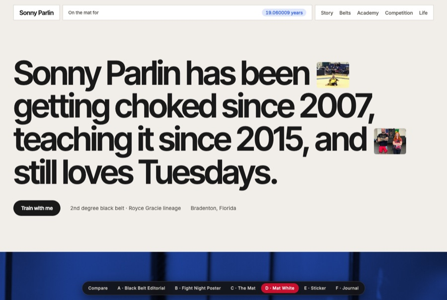
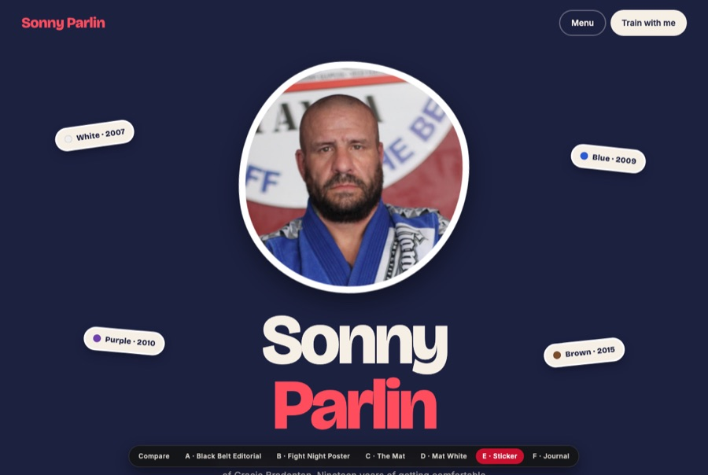
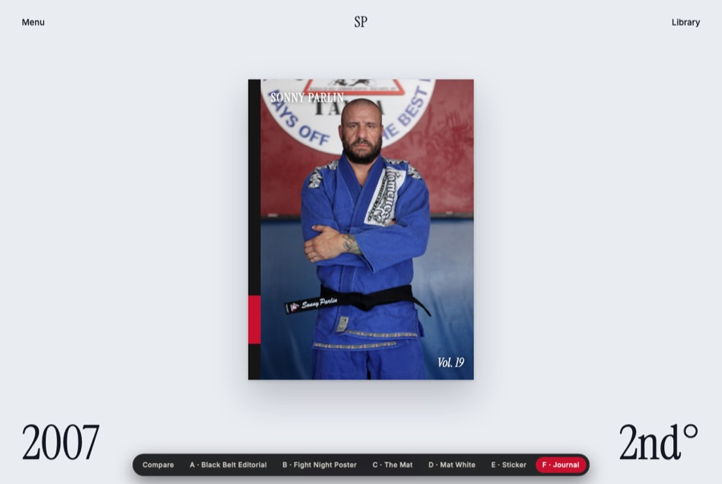
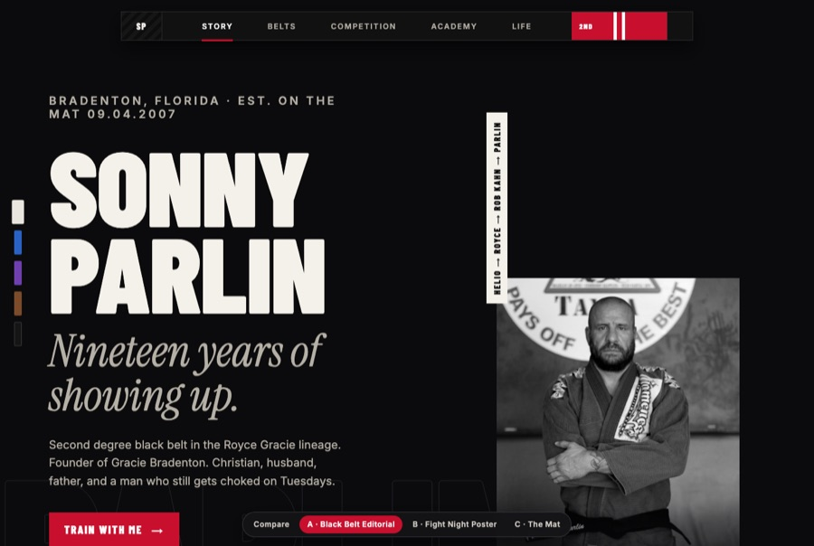
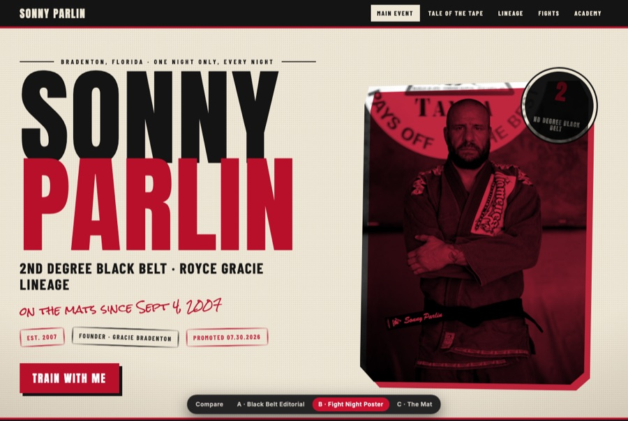
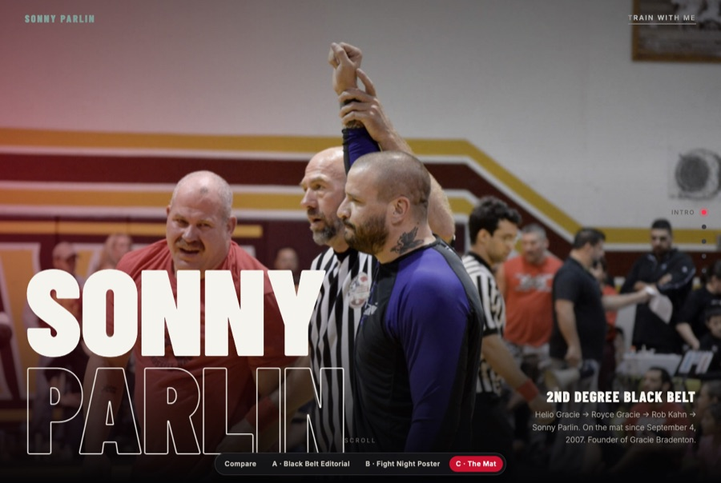

Three new directions drawn from what is winning on Siteinspire, Awwwards, Httpster and Site of Sites right now: lighter palettes, big tight grotesk or quiet serif type, one hero object, photos inline with the words, and data shown as clean tables. Click a card to scroll through it.

Warm cream, near-black, one blue accent lifted from your gi. A giant sentence-case headline with small photos set inline, a blue-washed full-bleed training photo, belts as a tour-dates table, and a live "on the mat for 19.05 years" counter in the nav.

Deep navy, cream and a coral red. Your portrait as a die-cut sticker with a thick white edge, belt-colour badges floating around it, a torn-paper divider, round stat badges, and a swipeable strip of sticker cards.

Pale blue-grey paper and a quiet serif. The hero is one object: your portrait as a magazine cover with a black-belt spine. Sections are a contents list, every belt is a back issue you can page through, and the story reads like an essay.
The first three, kept for reference. A is what the live site runs today.

The belt becomes the interface. The nav is a literal black belt with a red bar and two stripes; a rank rail on the left doubles as section navigation and belt-colour progress.

Cream paper, halftone grain, stacked headline in red ink, stamps, a tale-of-the-tape table and a lineage fight card. Light theme, loud personality.

Full-bleed photography, a pinned year counter that ticks from 2007 to 2026 as the belts scroll past, a horizontal snap gallery, and a cursor glow. Minimal chrome, maximum atmosphere.
Recommendation, round two: D. It is the direction the galleries are rewarding right now, it photographs your gi blue instead of fighting it with red, and the inline-photo headline gives the site a signature move in the first second. If you want more fun, E; if you want more calm, F.